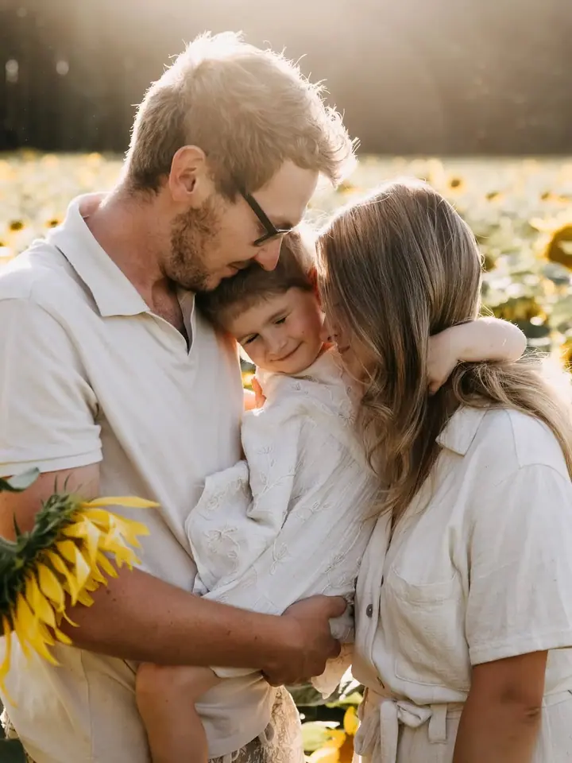
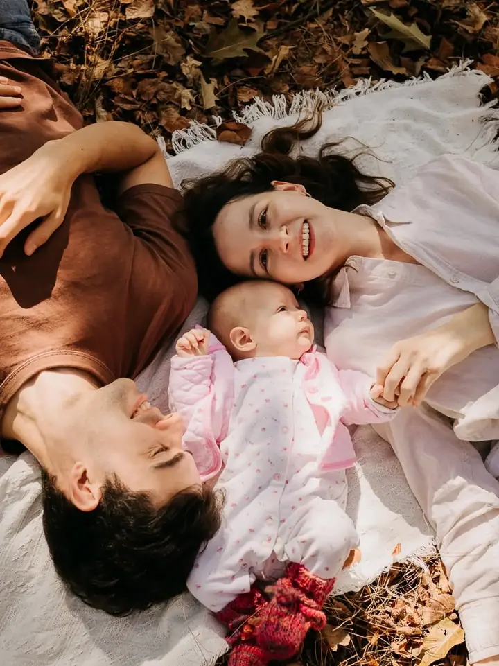
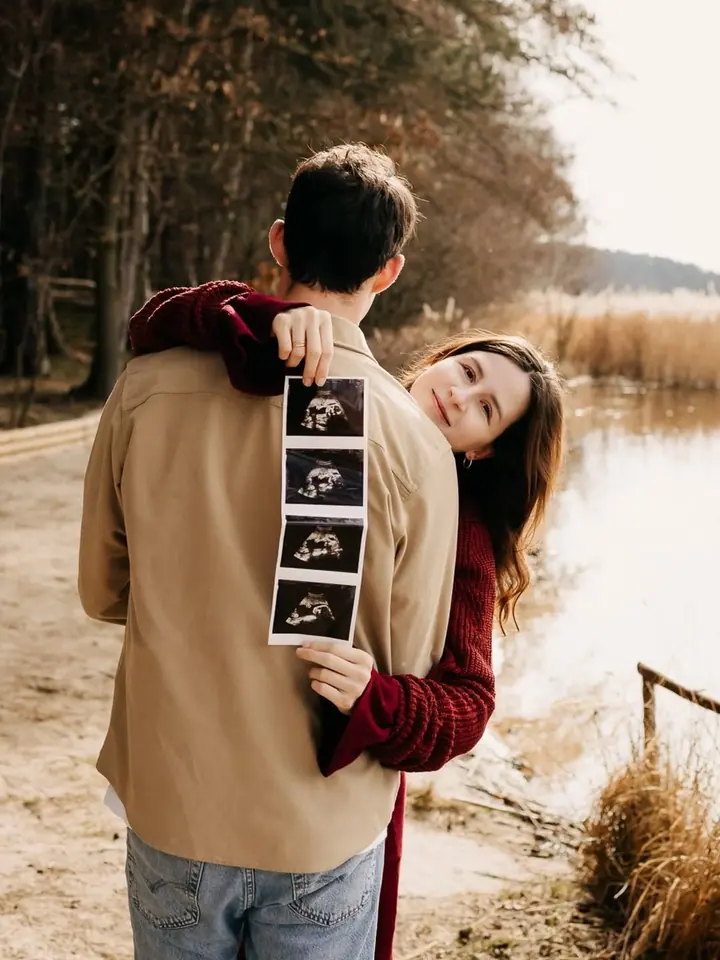
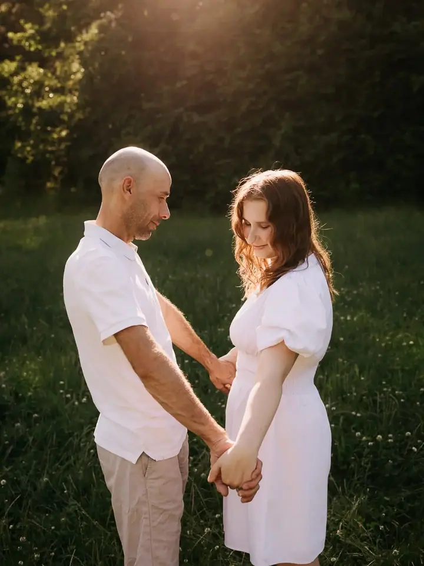

Rodinné focení
Přirozené rodinné fotky venku v přírodě nebo u vás doma. Bez strojených póz, tak abyste se na fotkách poznali.

Jmenuji se Karolína Koudelková a fotím rodiny, miminka i svatby v okolí Rokycan, Plzně a Hořovic. Fotím přirozeně, s citem a tak, abyste se cítili sami sebou. Potkat se …
Rezervovat termínJsem Karolína a fotím rodiny, miminka a svatby na Rokycansku, Plzeňsku a Hořovicku. Nejvíc mě baví chvíle, kdy přestanete myslet na foťák a jste prostě spolu.


Na focení nepotřebujete ateliér ani dokonale uklizený byt. Ráda vás vyfotím venku v přírodě, v zahradě nebo u vás doma, kde se cítíte nejlíp. U miminek fotím i fresh48, tedy první dny po porodu.
Nebudu vás aranžovat do strojených póz. Spíš vám dám prostor, občas jemně nasměruju a zbytek nechám na vás. Výsledkem jsou fotky, na kterých se poznáte.
Co fotím
Přirozené rodinné fotky venku v přírodě nebo u vás doma. Bez strojených póz, tak abyste se na fotkách poznali.
Focení miminek doma v jejich prostředí nebo fresh48 v prvních dnech po porodu. Klidně, s citem a v tempu miminka.
Svatební den fotím přirozeně, od obřadu po chvíle mezi tím. Zachytím, jak to opravdu bylo, ne jak se to mělo hrát.
Postup
Ozvěte se přes formulář nebo e-mail a napište, co byste rádi nafotili a kdy.
Vybereme místo a termín, venku v přírodě nebo u vás doma. Poradím vám i s oblečením.
Fotíme v klidu a bez spěchu. Nemusíte umět pózovat, stačí být spolu.
Fotky pečlivě vyberu a upravím a pošlu vám je v online galerii.
Otázky
Nejčastěji v okolí Rokycan, Plzně a Hořovic. Fotím venku v přírodě i u vás doma, záleží na tom, kde se budete cítit dobře.
Focení v prvních dnech po porodu, kdy je miminko úplně čerstvé na světě. Je to krátké a klidné focení, které se přizpůsobí vám i miminku.
Hodí se pohodlné oblečení v jemných, ladících barvách bez velkých nápisů. Před focením vám ráda poradím konkrétně.
Ano, svatby fotím přirozeně a nenápadně. Napište mi termín a místo a domluvíme se, jestli máme volno.
